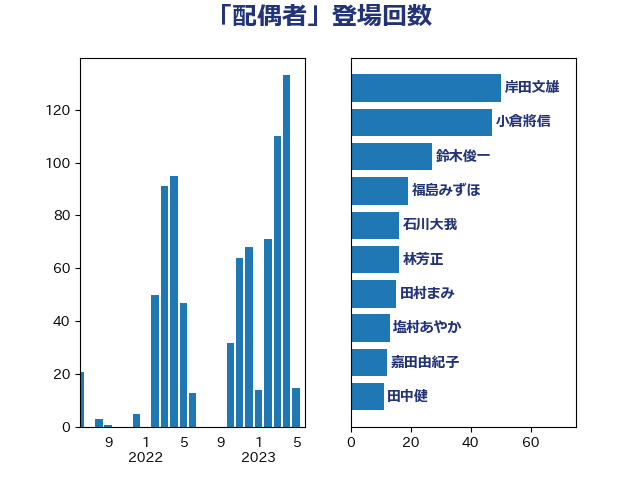

単語「配偶者」

| 岸田文雄 | 自由民主党 | 50 回 |
| 小倉將信 | 自由民主党 | 47 回 |
| 鈴木俊一 | 自由民主党 | 27 回 |
| 福島みずほ | 社会民主党 | 19 回 |
| 石川大我 | 立憲民主党 | 16 回 |
| 林芳正 | 自由民主党 | 16 回 |
| 田村まみ | 国民民主党 | 15 回 |
| 塩村あやか | 立憲民主党 | 13 回 |
| 嘉田由紀子 | 無所属 | 12 回 |
| 田中健 | 国民民主党 | 11 回 |
| 河野太郎 | 自由民主党 | 11 回 |
| 伊藤岳 | 日本共産党 | 10 回 |
| 松野博一 | 自由民主党 | 9 回 |
| 大西健介 | 立憲民主党 | 9 回 |
| 野田聖子 | 自由民主党 | 8 回 |
| 西田実仁 | 公明党 | 8 回 |
| 梅村みずほ | 日本維新の会 | 8 回 |
| 山添拓 | 日本共産党 | 8 回 |
| 浅野哲 | 国民民主党 | 7 回 |
| 小池晃 | 日本共産党 | 7 回 |
| 堀場幸子 | 日本維新の会 | 7 回 |
| 吉田はるみ | 立憲民主党 | 7 回 |
| 古川禎久 | 自由民主党 | 7 回 |
| 西岡秀子 | 国民民主党 | 6 回 |
| 羽田次郎 | 立憲民主党 | 6 回 |
| 石川博崇 | 公明党 | 6 回 |
| 古賀友一郎 | 自由民主党 | 6 回 |
| 佐藤英道 | 公明党 | 6 回 |
| 上田清司 | 国民民主党 | 6 回 |
| 高橋光男 | 公明党 | 5 回 |
| 野田佳彦 | 立憲民主党 | 5 回 |
| 秋葉賢也 | 自由民主党 | 5 回 |
| 櫻井周 | 立憲民主党 | 5 回 |
| 本村伸子 | 日本共産党 | 5 回 |
| 後藤茂之 | 自由民主党 | 5 回 |
| 岡本三成 | 公明党 | 5 回 |
| 安江伸夫 | 公明党 | 5 回 |
| 馬淵澄夫 | 立憲民主党 | 4 回 |
| 阿部司 | 日本維新の会 | 4 回 |
| 谷公一 | 自由民主党 | 4 回 |
| 芳賀道也 | 国民民主党 | 4 回 |
| 緒方林太郎 | 無所属 | 4 回 |
| 津島淳 | 自由民主党 | 4 回 |
| 土田慎 | 自由民主党 | 4 回 |
| 加藤勝信 | 自由民主党 | 4 回 |
| 前原誠司 | 国民民主党 | 4 回 |
| 倉林明子 | 日本共産党 | 4 回 |
| 仁比聡平 | 日本共産党 | 4 回 |
| 串田誠一 | 日本維新の会 | 4 回 |
| 高見康裕 | 自由民主党 | 3 回 |
| 道下大樹 | 立憲民主党 | 3 回 |
| 自見はなこ | 自由民主党 | 3 回 |
| 田村智子 | 日本共産党 | 3 回 |
| 田島麻衣子 | 立憲民主党 | 3 回 |
| 玉木雄一郎 | 国民民主党 | 3 回 |
| 東徹 | 日本維新の会 | 3 回 |
| 本田太郎 | 自由民主党 | 3 回 |
| 末松義規 | 立憲民主党 | 3 回 |
| 川合孝典 | 国民民主党 | 3 回 |
| 岸真紀子 | 立憲民主党 | 3 回 |
| 宮本徹 | 日本共産党 | 3 回 |
| 大塚耕平 | 国民民主党 | 3 回 |
| 大口善徳 | 公明党 | 3 回 |
| 塩田博昭 | 公明党 | 3 回 |
| 佐藤正久 | 自由民主党 | 3 回 |
| 上田勇 | 公明党 | 3 回 |
| 鎌田さゆり | 立憲民主党 | 2 回 |
| 逢坂誠二 | 立憲民主党 | 2 回 |
| 萩生田光一 | 自由民主党 | 2 回 |
| 篠原豪 | 立憲民主党 | 2 回 |
| 田村憲久 | 自由民主党 | 2 回 |
| 片山大介 | 日本維新の会 | 2 回 |
| 漆間譲司 | 日本維新の会 | 2 回 |
| 斎藤アレックス | 国民民主党 | 2 回 |
| 岡田克也 | 立憲民主党 | 2 回 |
| 山下貴司 | 自由民主党 | 2 回 |
| 守島正 | 日本維新の会 | 2 回 |
| 吉良よし子 | 日本共産党 | 2 回 |
| 伊藤俊輔 | 立憲民主党 | 2 回 |
| 中田宏 | 自由民主党 | 2 回 |
| 齋藤健 | 自由民主党 | 1 回 |
| 高良鉄美 | 無所属 | 1 回 |
| 高木かおり | 日本維新の会 | 1 回 |
| 馬場伸幸 | 日本維新の会 | 1 回 |
| 門山宏哲 | 自由民主党 | 1 回 |
| 長妻昭 | 立憲民主党 | 1 回 |
| 金子恭之 | 自由民主党 | 1 回 |
| 足立康史 | 日本維新の会 | 1 回 |
| 谷合正明 | 公明党 | 1 回 |
| 西村智奈美 | 立憲民主党 | 1 回 |
| 西村康稔 | 自由民主党 | 1 回 |
| 藤岡隆雄 | 立憲民主党 | 1 回 |
| 美延映夫 | 日本維新の会 | 1 回 |
| 穂坂泰 | 自由民主党 | 1 回 |
| 礒崎哲史 | 国民民主党 | 1 回 |
| 石井苗子 | 日本維新の会 | 1 回 |
| 玄葉光一郎 | 立憲民主党 | 1 回 |
| 渡辺周 | 立憲民主党 | 1 回 |
| 清水真人 | 自由民主党 | 1 回 |
| 深澤陽一 | 自由民主党 | 1 回 |
| 浜田靖一 | 自由民主党 | 1 回 |
| 池畑浩太朗 | 日本維新の会 | 1 回 |
| 池下卓 | 日本維新の会 | 1 回 |
| 森山浩行 | 立憲民主党 | 1 回 |
| 柿沢未途 | 無所属 | 1 回 |
| 松島みどり | 自由民主党 | 1 回 |
| 杉本和巳 | 日本維新の会 | 1 回 |
| 杉久武 | 公明党 | 1 回 |
| 打越さく良 | 立憲民主党 | 1 回 |
| 平将明 | 自由民主党 | 1 回 |
| 岩谷良平 | 日本維新の会 | 1 回 |
| 岩本剛人 | 自由民主党 | 1 回 |
| 山田太郎 | 自由民主党 | 1 回 |
| 山田勝彦 | 立憲民主党 | 1 回 |
| 尾辻秀久 | 無所属 | 1 回 |
| 尾身朝子 | 自由民主党 | 1 回 |
| 寺田稔 | 自由民主党 | 1 回 |
| 宮崎雅夫 | 自由民主党 | 1 回 |
| 堂込麻紀子 | 無所属 | 1 回 |
| 和田有一朗 | 日本維新の会 | 1 回 |
| 吉川赳 | 無所属 | 1 回 |
| 古屋範子 | 公明党 | 1 回 |
| 務台俊介 | 自由民主党 | 1 回 |
| 前川清成 | 日本維新の会 | 1 回 |
| 佐々木さやか | 公明党 | 1 回 |
| 伊藤孝恵 | 国民民主党 | 1 回 |
| 伊佐進一 | 公明党 | 1 回 |
| 井坂信彦 | 立憲民主党 | 1 回 |
| 井上哲士 | 日本共産党 | 1 回 |
| 一谷勇一郎 | 日本維新の会 | 1 回 |